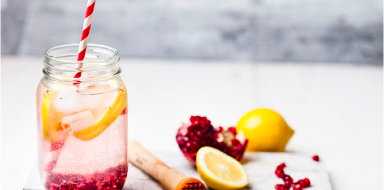

快速缓解眼疲劳 最有效的护眼方法推荐
2019/07/05养生知识
在生活中，骨质疏松是一种比较常见的疾病，但是，就是有很多中老年人出现了骨质疏松不知道该怎么办?那么，你想知道吗?中老年骨质疏松吃什么好，中老年骨质疏松要注意什么?想了解的朋友就一起来看看下文的介绍吧!
1.维生素K：建造骨骼的蛋白质，如骨钙素、蛋白质都需要维生素K才能发挥作用。维生素K水平低的人，跑步时髋骨骨折的概率增加30%。女性和男性每日应分别补充90微克和120微克。有益食物：西兰花、菠菜、甘蓝、西芹等绿叶蔬菜。
2.镁：骨质疏松的女性严重缺镁。虽然镁在骨骼的所有矿物中含量不过1%，但是缺镁会让骨头变脆，更易断裂。常人每天摄入400毫克即可。如果额外补充也有好处，因为能预防因补钙而引起的便秘。有益食物：全谷物食品、糙米、杏仁、花生和菠菜。
3.蛋白质：骨骼虽然看起来不够“活泼”，其实它们非常“忙碌”，一直处在不断的分解和合成过程中。骨骼合成需要的一种关键营养素就是蛋白质。事实上，骨骼22%的成分都是蛋白质。每公斤体重大约需要补充1克蛋白质，但也不能补太多。否则容易使血液呈酸性，从而消耗骨骼里的钙质，骨骼反而更受罪。有益食物：低脂奶制品、无皮家禽肉、鱼肉，各种豆类、豆腐等。
4.钾：水果和蔬菜含有大量钾，能中和酸。研究也发现，常吃含钾多的食品，骨骼更硬朗。每天从食物中摄取4700毫克即可。不过钾的补充剂可能对心脏不利，服用前请咨询医生。
中老年骨质疏松要注意什么
1.适当补充钙剂：适当补充钙剂也是预防骨质疏松症的很好办法。一般晚饭后是补充钙剂的最佳时间,这个时候补充钙剂,吸收率高,利用率好。但是补充钙剂一定不能过量。成人每日补钙800毫克即可。
2.户外运动：户外运动不仅能通过全身运动,促进骨密度增强,还可以因为太阳光的照射,增加人体维生素D的合成。
3.中医艾灸：近来有关研究表明,艾灸中脘、脾俞、肝俞、足三里等相关穴位,可以防治肝气不足、肝肾阴虚、肾阳虚,充实肾精肾气,从而达到预防骨质疏松的作用。
4.平衡饮食：拒绝不良生活习惯。多吃含钙和维生素D和矿物质的食物果蔬,如牛奶、蛋类、波菜、洋葱、鱼虾、坚果、五谷杂粮等,少吃高磷食物。
结语：通过上文的介绍，相信大家都已经知道了中老年骨质疏松吃什么好，中老年骨质疏松要注意什么了吧!希望上文的介绍能够帮助到大家哦!
最新文章Latest Articles

视力下降的表现有哪些 引起视力减退的疾病有哪些？
2019/06/12 | 健康养生
视力下降的表现有哪些 引起视力减退的疾病有哪些？
2019/06/12 | 健康养生
视力下降的表现有哪些 引起视力减退的疾病有哪些？
2019/06/12 | 健康养生
Prev Article
早上起来特别饿吃什么 特别饿不适合吃什么?